Maria Katsaris
Reich Family Genealogical Research Project
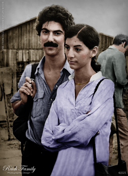


The Life and Death of Maria Katsaris
The Treasurer of Peoples Temple
(Reich Family) 09/05/24 - Maria Katsaris was born on June 9th, 1953 in Pittsburgh Pennsylvania to Steven Anthony Katsaris and Sophia M Papadeas Katsaris. The Katsaris family later moved to California. Maria attended Carlmont High School in Belmont California prior to the family's move to Ukiah California. Maria was the granddaughter of Greek immigrants, Antonious Anthony Peter Katsaris and Mary Christou Katsaris, both from the island of Euboea in Greece.
Maria's grandfather, Antonious Anthony Peter Katsaris, was born on 18 May 1885 on the island of Euboea in Greece to Mr and Mrs Peter Katsaris. Maria's grandmother, Mary Christou, was born on 15 August 1895 in Greece. Antonious Anthony Katsaris first married Evangelia Koutoulas in 1904. Twenty years later, Anthony married Mary Christou on 7 June 1924 on the Greek island of Euboea. Anthony was a steel worker. He was a member of the Greek Orthodox Church. Anthony lived in Salt Lake City Utah seven years prior to his death. His siblings were John P. Katsaris, Katherine Katsaris Benos, and Philla Katsaris Vasilou - all of Greece. His children with Evangelia Koutoulas Katsaris were Sophia Evangelia Katsaris Papas, Panayiotis Anthony "Peter" Katsaris, Nicholas Anthony "Nick" Katsaris, Anna N Katsaris Karamanos, Vassiliki Julia P. Katsaris Maronitis, and Evangeline Ruth Katsaris Chuchanis. His children with Mary Christou were Clara Elizabeth "Betty" Katsaris Vlahos and Steven Anthony Katsaris. At the time of his death, Anthony and Mary had 25 grandchildren and 20 great-grandchildren. Antonious Anthony Peter Katsaris died Sunday, 3:05 AM, in a Salt Lake hospital of a heart ailment. His funeral was held at the Holy Trinity Greek Orthodox Church. He and his wife Mary are laid to rest at Forest Hill Cemetery in Canton, Ohio.
Maria had a brother named Anthony Katsaris. She had a sister, also named Maria, who was born before her on 5 Nov 1951 at Altoona Hospital in Altoona Pennsylvania. Baby Maria died only one day later on 6 Nov 1951 due to a premature birth. Baby Maria is laid to rest in Rose Hill Cemetery in Altoona, Pennsylvania. She had a sister named Elaine Constance Katsaris. Elaine attended Mountain View Union High School in Mountain View California. Elaine Constance Katsaris, age 23, married Alan E Launer, age 23, in 1982 in San Mateo, California. Elaine worked as an educator at Saint Joseph Mountain View Catholic School in Mountain View, California. Elaine Constance Katsaris Launer died on July 24th 2000 in San Mateo California. She was 41 years old.
In August 1972, the Katsaris family was first introduced to a religious group in Ukiah California called Peoples Temple, headed by Reverend Jim Jones. Steven Katsaris was the guest speaker at a late night meeting convened just for him. In attendance was his 19 year old daughter, Maria Katsaris. After Steven Katsaris finished his guest speaking, the family left the building while the tape continued to roll with Jones continuing to address his congregation. Jones denounced the Greek Orthodox Church and further denounced Steven Katsaris. He then expressed his interest in winning over Maria Katsaris. Steven's daughter, Maria Katsaris, joined Peoples Temple. She traveled with the group to Guyana South America where she would later play a major role in Jones' organization, especially in the final year of its existence. This is a recording of that first meeting in August 1972.
Maria's father, Steven Katsaris, appealed to the media and to politicians who represented his district in California to bring his daughter home whom he felt was being held against her will by Jim Jones in Jonestown Guyana. On April 17th 1978, in a radio transmission from Jonestown to address concerned relatives in America, Maria Katsaris made strong accusations against her father. She vowed she would never leave Jonestown and return to the US.
In the Fall of 1977, Steven Katsaris submitted an affidavit classified as, Concerned Relatives, Exhibit C-1: Affidavit of Steven A. Katsaris, An Account of Some of My Experiences with Peoples Temple Church when I Attempted to Visit My Daughter in Guyana. In this affidavit, Steven Katsaris described his final meeting with his daughter, Maria, in Georgetown Guyana, in November 1977. The lead-up to the meeting was fraught with one cancellation after another. Finally, the meeting would take place at 7:15 on a Sunday morning. The following is Steven Katsaris' account of that final meeting, taken from the affidavit.
"At 7:15 Sunday morning, I was informed by a representative of Peoples Temple Church that Maria would meet with me in 45 minutes. Ambassador Mann and Mr. McCoy were at the meeting when Maria arrived with four other persons, two men - one who identified himself as an attorney representing the Church – and two women. Maria appeared agitated, could not look me in the eye, and did not return my embrace which appeared unusual and even ominous to me. She looked as if she had not slept well or had been deprived of sleep over a long period of time and her general attitude was one of suspicion, hostility and paranoia."
"She accused me of causing trouble for the Guyanese government and stated that because of my efforts Guyana had been black listed by the International Human Rights Commission. She stated further that the Church had been informed by the United States government that I was a member of a conspiracy against the Church and was associated with a right wing congressman who intended to destroy the Church. She accused me of lying to her about my health. When I pointed to Paula Adams, one of the women who accompanied her to the meeting, and asked if she knew that this woman had gone to Mr. McCoy and told him that I had abused my daughter sexually, Maria refused to discuss the subject. When I told her that I had information that she had signed an undated suicide note, she demanded to know the source of my information. I told her that was not the important issue and that she could alleviate my anxiety by simply telling me it was not true. She replied that since I would not reveal the source of my information she would not discuss that subject."


"In the course of the conversation with Maria I told her that before leaving for Guyana I had spoken with Grace Stoen who wanted me to convey her love and concern to her son John. Maria told me that Grace was an unfit mother and she had abused her child and that Maria was now the mother for John. She also told me in a tone that I did not believe possible from my daughter that if Grace made any attempt to get her child back she would be sorry. My daughter’s affect and the manner in which she spoke conveyed to me the tone of a serious threat."
"The entire meeting was extremely painful for me and depressing. I managed to tell my daughter that if she ever wanted to return home a ticket would be waiting for her at the Embassy. When I told her of my belief in God and that somehow things would work out, she and another woman from the Church were quick to point out to me that they do not believe in God." - Concerned Relatives, Exhibit C-1: Affidavit of Steven A. Katsaris, An Account of Some of My Experiences with People’s Temple Church when I Attempted to Visit My Daughter in Guyana.
On April 17th 1978, in a radio transmission from Jonestown to address concerned relatives in America, Maria Katsaris said that her father raped her from childhood up. She vowed she would never leave Jonestown and return to the US. This is an audio clip of that radio call along with the transcript. "This is Maria Katsaris. I am 24 years old and I am the daughter of Steven Katsaris, who I understand is making public statements to the media that I am being held in some sort of state of captivity here in Guyana. He has also said a lot of other things that are equally and totally false. I'm making this statement to set the record straight once and for all. First of all, I am not being held in any sort of captivity. That is totally absurd. I have gone to several places on business for the church and have traveled alone. Obviously, I am free to come and go as I please. You can check with the U.S. consulate, Mr. Richard McCoy, who has visited our project and who knows about our work. I have been to his office on business many times alone, and I have flown with him in a private aircraft alone, and could have said to him on any number of occasions anything I wanted to. The statement of Mr. Katsaris is an insult, not only to myself, to Jim Jones, to Peoples Temple, but to the integrity of the Guyana government, and to the United States Consulate and State Department. Now, let's get down into the real reasons for Mr. Katsaris's lies. First of all, this man has sexually molested me. He did this all through my childhood, up into my teens. He has always had a sick attachment to me. He is indeed a disturbed person and has had to go for several years to a psychotherapist about his problems. He is a highly manipulative person and like many mentally sick people, he is an excellent actor. He can look you right in the eye and convince you that he is the model of virtue. He is particularly hung up on me and cannot stand the fact that I have grown up, have left his household and refused to worship him. He has actually told me that I should worship him as an icon unto God. Not only that, but the man was an ordained minister all during the time he was molesting me. What he put me through had so totally traumatized me as a child that I was for years terrified to even tell anyone anything about it. Now I am telling everyone and putting it on the record. I don't want anything to do any longer with this sick man. I am engaged and fully independent. I resent deeply this man's public lying, his various schemes against the People's Temple, against Jim Jones, and against me, in order to pursue his basically sick designs. At this point, I am fed up, and I am telling him now that I am leading my own life and want absolutely no part of him. It is time he grew up, got over his pathetic hang ups and desires to be worshiped. I'm saying to Stephen Katsaris, I want you to leave me alone. I couldn't be happier than I am here in Jonestown in Guyana. This community is a great challenge and opportunity for me. And I have never felt better, been healthier, or been involved in more interesting and rewarding work. That is the end of my statement."
On November 18th 1978, in Jonestown Guyana South America, Jim Jones led 913 members of Peoples Temple in the largest mass suicide in history. Congressman Leo Ryan; photographer Greg Robinson of The San Francisco Examiner; NBC cameraman Bob Brown; NBC reporter Don Harris; and Temple defector Patricia Parks - were shot to death by Jim Jones' loyal death squad on the Port Kaituma airstrip. Sharon Amos and her grown daughter Liane Harris along with Sharon's young children, Christa Amos and Martin Amos, all died at a house owned by Peoples Temple in Lamaha Gardens in Georgetown. Anthony Katsaris was badly wounded on the airstrip.
Prior to the mass suicide, Anthony Katsaris traveled to Jonestown with Congressman Leo Ryan to persuade his sister, Maria Katsaris, to return with him to California. In a photo of Maria and Anthony on the morning of the suicides in Jonestown, likely taken by San Francisco Examiner photographer, Greg Robinson, who was killed by Jones' death squad at the Port Kaituma airstrip, Anthony looks thankful and happy to just be standing next to his sister. His face speaks volumes of his adoration and love for a sister, it seems, he'd love to hold and never let go. Maria, on the other hand, has a far away look on her face of utter obstination. Aside from taking photos of the siblings, NBC News conducted a short interview with Maria and Anthony in Jonestown in November 1978.
Maria Katsaris was one of Jim Jones' closest assistants. She held one of the top leadership positions in the organisation. In news articles, she is disrespectfully referred to as one of Jim Jones' mistresses. Some believe Katsaris was the last to die in Jonestown - shooting Jim Jones before killing herself; however, there is no definite evidence of just who killed Jones.
Maria's leadership role was evident during the carrying out of the suicides of 909 people in Jonestown. Of the 909 suicides, 190 were children aged 12 and under. As mothers and children screamed all around her, Maria Katsaris took the microphone and asked parents to be calm and keep their children calm as they administered a deadly dose of cyanide poison to their children. Although she did not overtly tell parents to administer cyanide poison to their children, she actively participated in the act by reducing panic and preventing interruptions, making it easier for parents to proceed with giving the lethal dose. Rather than attempting to stop or even question what was happening, she actively supported and facilitated the killings of children. In FBI tape number Q042 of the Jonestown deaths, Maria said, "You have to move and the people that are standing there in the aisle go stay in the radio room yard. So everybody get behind the table and back this way. OK? There’s nothing to worry about. Everybody keep calm and try and keep your children calm. And the older children are gonna help let the little children and reassure them. The children aren't crying from pain. It’s just a little bitter tasting but, they’re not crying out of any pain."


In the middle of the mass suicide, Maria handed off a suitcase filled with cash to Mike Prokes, Tim Carter and his brother Mike Carter. The three men were armed with handguns and were instructed by Katsaris to deliver the cash to the Russian Embassy in Georgetown. In a 1978 interview with the Carter brothers, while still in Guyana, Mike Carter said that authorities reported to the press that there was half a million dollars in the suitcase. In that same interview, Tim Carter said they had no idea how much money was in the suitcase because they weren't informed of the amount and certainly didn't count it. In subsequent interviews, many years later, Tim Carter said the amount of money in the suitcase was a million and a half dollars. In the 1978 interview in Guyana, Tim Carter and Mike Carter said that the men had transferred the cash into a bag and left it in a chicken house. They both reported that they ran for their lives from Jonestown. They said they were picked up by Guyanese authorities hours later and taken to police headquarters where they were placed under protective custody for a time but not under arrest. The fate of the cash was never disclosed.
Maria Katsaris died on the night of November 18th 1978, in Jim Jones' cabin, by self-administered cyanide poisoning. She was 25 years old.
Maria's body was returned to the United States from Jonestown Guyana to Dover Air Force Base, Delaware. An autopsy was performed on December 15th, 1978. The autopsy stated that Maria was dressed in a green checked shirt, tan trousers with a brass belt buckle, white socks, and blue sneakers, and wearing gold colored earrings. In attendance at her autopsy were: Robert L. Thompson (Captain, MC, USM), Kenneth H. Mueller (LtCol, USAF, MC), Joseph M. Ballo (LTC, MC, USA), Douglas S. Dixon (Major, MC, USA), and Rudiger Breitenecker (MD).
Maria Katsaris was laid to rest at Potter Valley Cemetery in Potter Valley, Mendocino County, California. Maria's original grave marker was carved wood by her father, Steven Katsaris. He lovingly carved words in Greek onto the wooden marker that translated to English as "Beloved Daughter, I understand." The sentiment was transcribed to a stone marker later.
When we first discovered an extra grave marker for Maria Katsaris next to her sister's grave in San Mateo California on Find a Grave, it was listed as being a cenotaph by a Find a Grave photograph contributor. That contributor subsequently contacted us stating that this is Maria's new resting place, according to contact they had with a representative of Potter Valley Cemetery. Maria's remains were supposedly disinterred from her grave in Potter Valley Cemetery in 2000. She was supposedly laid to rest again beside her sister, Elaine Constance Katsaris Launer, in Skylawn Memorial Park cemetery in San Mateo, California. Until we can see documentation to prove the disinterment, we will not accept this information as official, as we have had no luck finding such documentation in any State of California database, which, by that state's law, is public information.
Maria was loved, especially by her family. Her father Steven Katsaris appealed to the media and to politicians that his daughter was not in a good place and needed to be returned to her loving family. Her brother, Anthony Katsaris, surely took a bullet for his sister. He traveled thousands of miles to bring her home. Maria was a daughter, a sister, and a dear friend to many. Her life is not remembered for the sole event that took place in Jonestown Guyana on November 18th, 1978 by those who loved her.
The Reich Family is a small religious group of under a thousand members. We approached this memorial with a greater understanding of Maria's dedication and devotion to the religious group she joined as a young woman. It pains us to reveal the bitter truths about Maria's participation in the deaths of children. The documentation of historical facts overshadows our desire to grant her more respect in death. We offer our sympathies and prayers to the remaining Katsaris family members. Almighty God will be your judge, dearest Maria. We pray that He grants you a place in Paradise.
Copyright 2025 All Rights Reserved

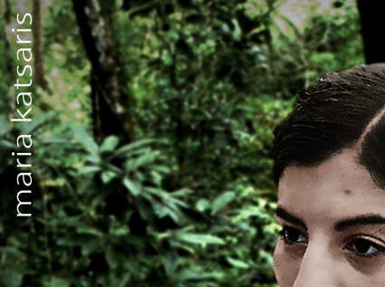
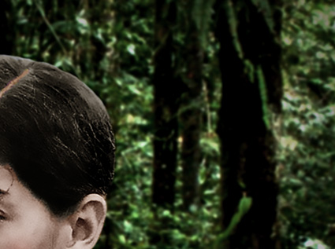


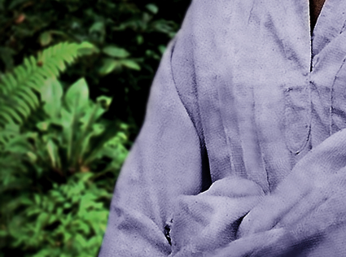

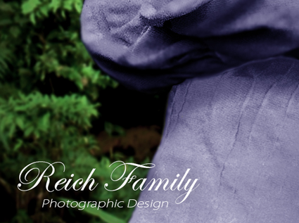
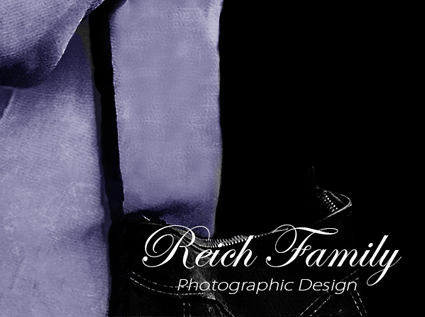
While our article on Maria Katsaris presents genealogical and historical facts of her life, there remains a need for deeper spiritual and ethical reflection on her role in Peoples Temple. That reflection comes from within the Reich Family, through the voice of one of our own, Sarah Reich, who holds a position much like the one Maria once held in Peoples Temple. In her article, Sarah offers a personal testimony shaped by lived experience, reverence, and moral clarity. Her words do not seek to judge Maria, nor to excuse her. They seek to understand her, to learn from her, and to protect others from the path she chose. For readers wishing to move beyond the facts and into the heart of what Maria’s story means today to the Reich Family, Sarah Reich’s companion piece, Maria Katsaris: Through the Eyes of Another Disciple, provides that rare and necessary perspective.
Maria & Anthony Katsaris
Jonestown NBC News Interview
18 November 1978
Maria Katsaris
Participated in the Killing of Children
November 18th 1978


Anthony & Maria Katsaris
Their Final Breakfast
November 18th 1978


The Death Tape
Jonestown Suicides
November 18th 1978


Anthony & Steven Katsaris
Recuperating From Jonestown
December 1978


Elaine Constance Katsaris
Sister of Maria Katsaris
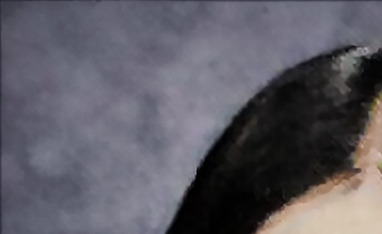
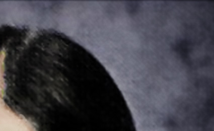
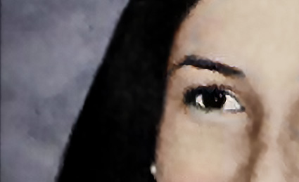
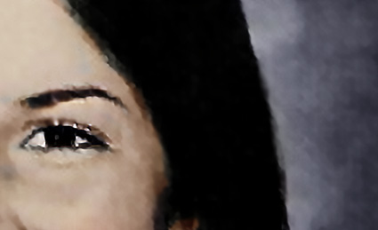
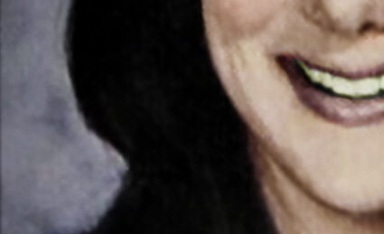
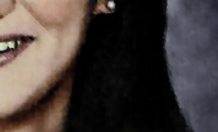
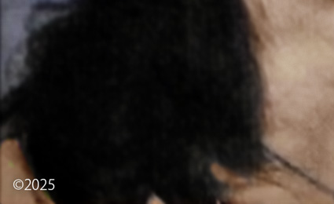
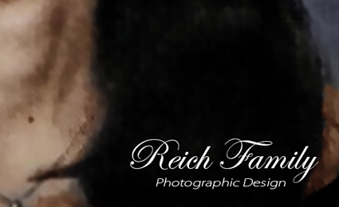
Maria Katsaris Marker
Skylawn Memorial Park - San Mateo California

Steven Katsaris
Visits His Daughter's Grave


Research, Writing and Photographic Design by
Reich Family Genealogical Research Project
The Reich Family
Peoples Temple Resources
Jonestown & Peoples Temple: A Digital Archive
Transmissions from Jonestown
Special thanks to the research of Barnett
Find a Grave, database and images (https://www.findagrave.com/memorial/62519597/antonious_anthony_peter-katsaris), memorial page for Antonious Anthony Peter Katsaris (18 May 1885–11 Mar 1962), Find a Grave Memorial ID 62519597, citing Forest Hill Cemetery, Canton, Stark County, Ohio, USA; Maintained by Reich Family (contributor 49491112).
Find a Grave, database and images (https://www.findagrave.com/memorial/255566166/evangelia-katsaris: accessed November 19, 2025), memorial page for Evangelia Koutoulas Katsaris (1884–1923), Find a Grave Memorial ID 255566166, citing Forest Hill Cemetery, Canton, Stark County, Ohio, USA; Maintained by Kris (contributor 47404669).
Find a Grave, database and images (https://www.findagrave.com/memorial/62519598/mary_a-katsaris), memorial page for Mary A Christou Katsaris (15 Aug 1895–6 Feb 1987), Find a Grave Memorial ID 62519598, citing Forest Hill Cemetery, Canton, Stark County, Ohio, USA; Maintained by Reich Family (contributor 49491112).
Find a Grave, database and images (https://www.findagrave.com/memorial/210486654/steven_anthony-katsaris: accessed November 19, 2025), memorial page for Rev Fr Steven Anthony Katsaris (26 Mar 1928–26 Jul 2019), Find a Grave Memorial ID 210486654, citing Whitepine Cemetery, White Pine, Sanders County, Montana, USA; Maintained by Reich Family (contributor 49491112).
Find a Grave, database and images (https://www.findagrave.com/memorial/152432259/maria-katsaris), memorial page for Maria Katsaris (5 Nov 1951–6 Nov 1951), Find a Grave Memorial ID 152432259, citing Rose Hill Cemetery, Altoona, Blair County, Pennsylvania, USA; Maintained by spanielfam (contributor 47112159).
Find a Grave, database and images (https://www.findagrave.com/memorial/255589688/elaine_constance-launer), memorial page for Elaine Constance Katsaris Launer (7 Apr 1959–24 Jul 2000), Find a Grave Memorial ID 255589688, citing Skylawn Memorial Park, San Mateo, San Mateo County, California, USA; Maintained by Reich Family (contributor 49491112).
"California, Marriage Index, 1960-1985", FamilySearch (https://www.familysearch.org/ark:/61903/1:1:V6DK-5H8 : Tue Feb 25 00:33:18 UTC 2025), Entry for Alan E Launer and Elaine C Katsaris, 1982.
Katsaris Family's First Introduction to Peoples Temple in Ukiah California
FBI Tape No. Q1021-A August 1972
Radio Calls for Concerned Relatives April 17 1978
FBI No. Q736 Press conference on Concerned Relatives
San Francisco Examiner / UPI 1978 / Photographer: Greg Robinson
NBC News 1978 Interview with Anthony and Maria Katsaris
Cameraman: Bob Brown / Interviewer: Don Harris
ABC News 1978 Interview with Tim Carter and Mike Carter in Guyana
Jonestown - The Life - Death of Peoples Temple
Director: Stanley Nelson / Writers: Marcia Smith and Noland Walker
FBI Archive of Jonestown Recordings The Jonestown Death Tape
(FBI No. Q042) November 18th 1978
United States Air Force Autopsy Report (A006) AFIP# 1680273
Steven Katsaris Memorial Site
Reich Family Genealogical Research Project
The Life & Death of Peoples Temple